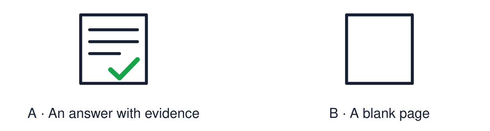

Arrival choices
Previous lesson reminder:

Start with 1 and 2. Try 3 and 4 when ready. Reading and exact scribing are available.
1 Give one way to show respect when values differ.
Support: Use the reminder strip or talk it through with an adult.
2 Which meaning fits evidence?
Support: Choose: An example or fact that supports an answer OR Something that gives information, such as an image or a profile.
3 What makes evidence strong?
Support: Use the model evidence anchor A or read one relevant card together.
4 Is a model answer the only correct answer?
Support: Give a reason when ready.
Stretch: use a precise example or explain which detail supports your answer.
Evidence cards
Read, point or listen. Keep the source label with any detail you use.
A Using a source
Point: answer the question. Evidence: “The source shows…”. Explain: “This means… because…”.
Source: Authored classroom resource
Limit: A frame is a support. Your own wording is welcome.
B Sample question
“How can a festival show what people believe?”
Source: Authored classroom example
Limit: This is a practice question, not the assessment.
C Sample evidence
Source: a row of lit diyas. “The source shows lamps lit at Diwali. For many Hindus this means good overcoming evil.”
Source: Authored classroom model
Limit: A model shows the method. It is not the only good answer.
D This term
Worldviews · identity chains · Diwali · Hanukkah · Christmas · comparing · remembrance · belonging · places of worship · vocabulary · big questions · visitor · values.
Source: Authored classroom resource
Limit: Choose what you can explain.
Evidence cards continued
Read, point or listen. Keep the source label with any detail you use.
E1 Assessment source Rama and Sita
Many Hindus tell the story of Rama and Sita at Diwali. After Rama rescues Sita from Ravana, people light lamps to guide them home. Light stands for good overcoming evil.
Source: Authored retelling; see Hindu American Foundation, Diwali
Limit: Not everyone who celebrates Diwali tells this story.
E2 Assessment source Practices
Families clean and decorate homes, make rangoli, light diyas, share sweets and visit each other. Many Hindus also pray to Lakshmi.
Source: Authored summary; see Hindu American Foundation, Diwali
Limit: Families celebrate in different ways.
E3 Assessment source The oil
They rededicated the Temple and lit its lamp. Tradition says there was only enough pure oil for one day, but it lasted eight.
Source: Authored retelling; see Chabad, What is Hanukkah
Limit: The oil story is a religious tradition.
E4 Assessment source Hanukkah today
Jewish families light one more light each night for eight nights. The lights recall the rededication and stand for faith and hope.
Source: Authored summary; see Chabad, What is Hanukkah
Limit: Jewish families celebrate in different ways.
Shared investigation
1. Match each piece of evidence to the question it best supports.
2. Complete one supported answer together.
Work with a partner or adult, or use your own table. One person suggests; the other checks the evidence. Swap after one turn. Passing is allowed.
Move or match the cards
| Cards to use |
|---|
| Ben’s reply to Aaliyah |
| Simran serving langar |
| A row of lit diyas |
Possible labels: How can a community support belonging? / How can a festival show belief? / How can we respect different values?
Support: Read one evidence card together. Highlight a useful detail. Rehearse with: I think ___. The source shows ___. This means ___ because ___.
Further challenge: Explain which of your answers is strongest and why.
Supported independent task
Complete this route only. Show understanding of beliefs, festivals, belonging and respect using evidence from the term.
1. Answer using picture and word choices.
2. Point to the source that supports your answer.
3. Tell an adult one reason. They can write it.
Support: Read one evidence card together. Highlight a useful detail. Rehearse with: I think ___. The source shows ___. This means ___ because ___. Complete the organiser one space at a time. I think ___. The source shows ___. This means ___ because ___.
An adult may read or scribe your exact response. They should not choose the answer.
Standard independent task
Complete this route only. Show understanding of beliefs, festivals, belonging and respect using evidence from the term.
1. Answer each question with a point.
2. Add evidence from a source or image.
3. Explain using “because”.
Support: I think ___. The source shows ___. This means ___ because ___.
Check the required evidence and revise one detail.
Stretch independent task
Complete this route only. Show understanding of beliefs, festivals, belonging and respect using evidence from the term.
1. Answer each question with point, evidence and explanation.
2. Compare two worldviews in one answer.
3. Identify one strength and one next step.
Support: Choose the evidence independently. Use the frame only if it helps.
Explain which of your answers is strongest and why.
Exit ticket
Choose a response mode. You may give your answers privately to an adult.
What makes evidence strong?
Is a model answer the only correct answer?
Support: I think ___. The source shows ___. This means ___ because ___.
Further challenge: Explain which of your answers is strongest and why.